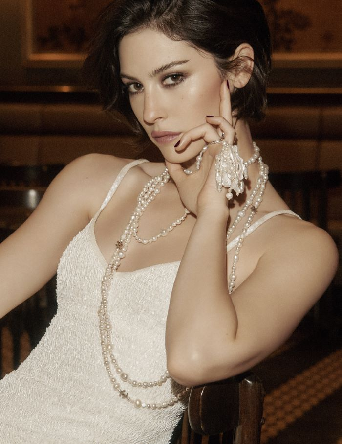
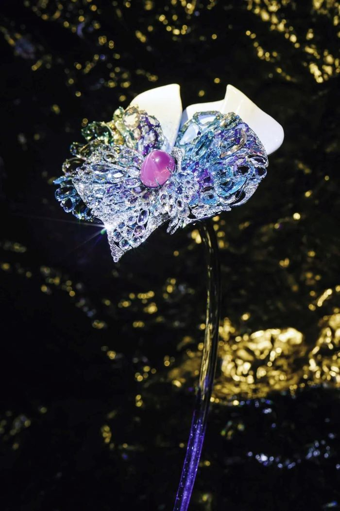
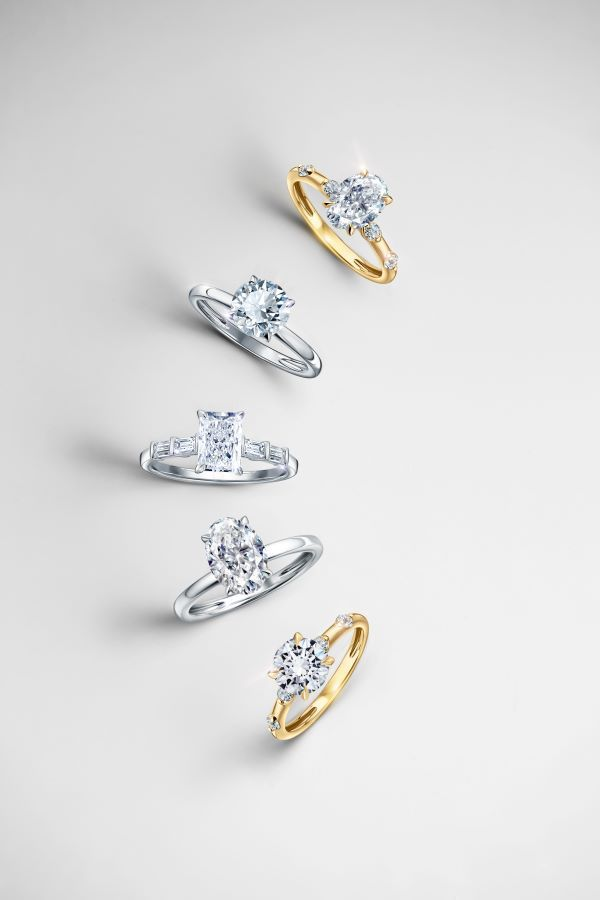
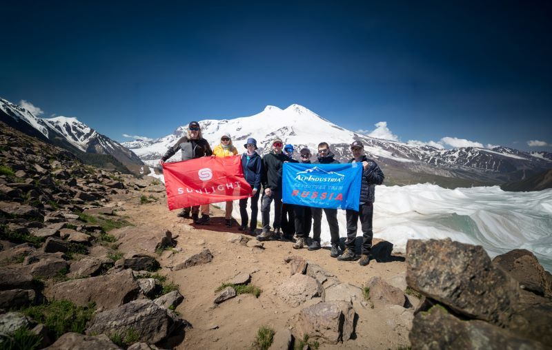
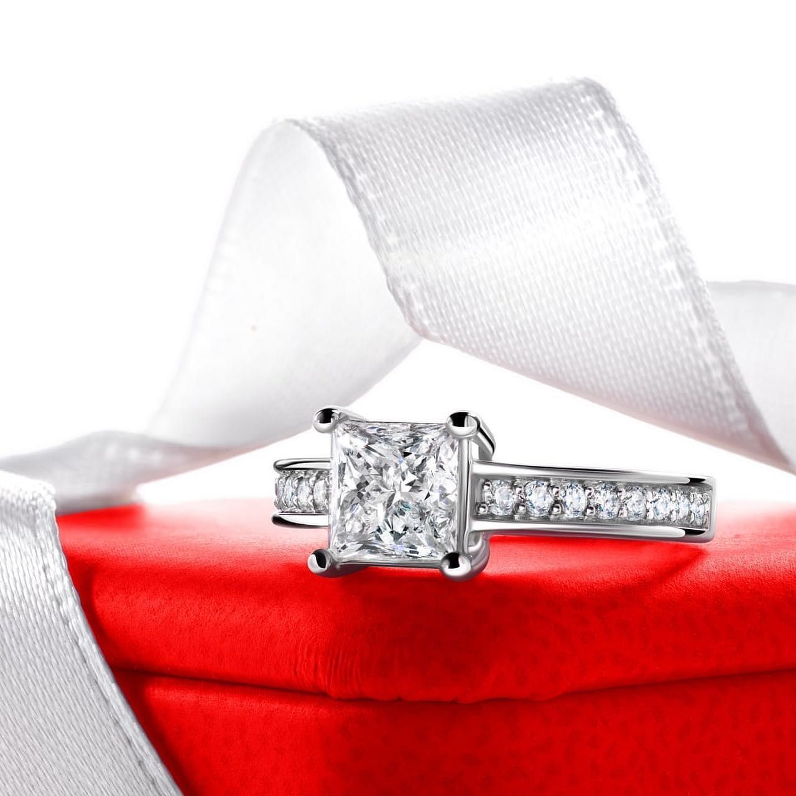
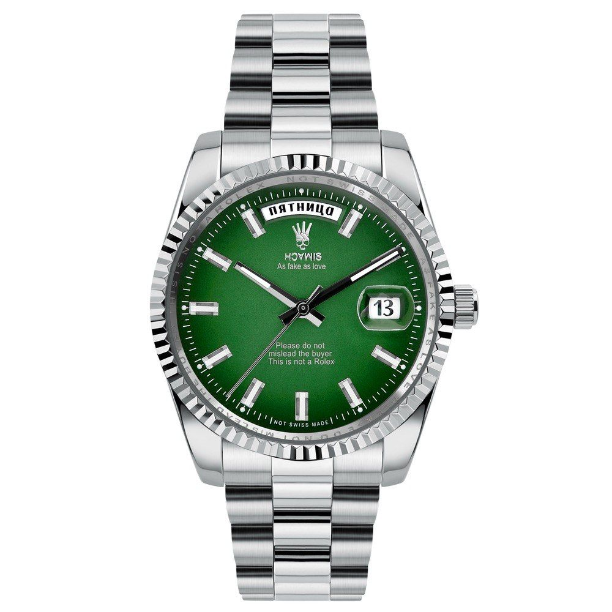
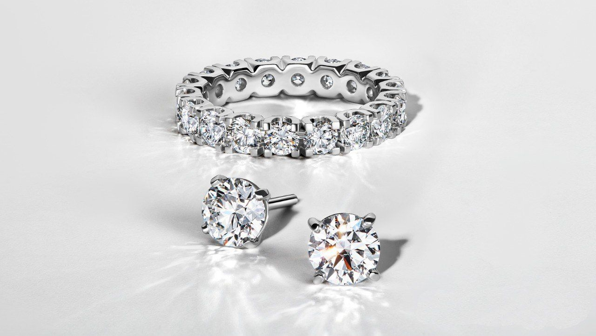

Ювелирная энциклопедия SUNLIGHT
Новости
Все новости →


Читайте «Ювелирное дело»
uvelirnoedelo.ru →Камни
Все материалы →
29.09.2026 Жемчуг и свобода: Грейси Абрамс в новой истории Chanel
29.09.2026 Фэн Цзя: Моне, рассказанный драгоценными камнями
28.09.2026 Зумеры стали единственным поколением, которое покупает себе украшения «для настроения»
25.09.2026 На Эльбрус за бриллиантом
15.09.2026 Первое украшение россияне получают все раньше: у каждого третьего зумера оно появилось еще до школы
30.08.2026 Часы как подарок: почему настоящая ценность измеряется не временем, а историей
28.08.2026 Верные друзья – бриллианты! 07.08.2026
Виды дорогих камней и их особенности
07.08.2026
Виды дорогих камней и их особенности
 10.07.2026
Чонгук из BTS стал новым глобальным амбассадором Graff
10.07.2026
Чонгук из BTS стал новым глобальным амбассадором Graff
 28.07.2026
Graff представил уникальную коллекцию брошей Butterfly
28.07.2026
Graff представил уникальную коллекцию брошей Butterfly
 03.04.2026
Глубина цвета: новая глава Louis Vuitton Color Blossom
03.04.2026
Глубина цвета: новая глава Louis Vuitton Color Blossom
 30.04.2026
Ocean Dream: бриллиант цвета океана выходит на торги Christie’s
30.04.2026
Ocean Dream: бриллиант цвета океана выходит на торги Christie’s
 23.05.2026
Cartier Le Choeur des Pierres: симфония драгоценных камней
23.05.2026
Cartier Le Choeur des Pierres: симфония драгоценных камней
 13.07.2026
АйЮ стала новым глобальным амбассадором Jaeger-LeCoultre
13.07.2026
АйЮ стала новым глобальным амбассадором Jaeger-LeCoultre
 21.05.2026
Chanel: язык символов и новая глава высокой ювелирной моды
21.05.2026
Chanel: язык символов и новая глава высокой ювелирной моды
 21.07.2026
Chaumet представляет коллекцию «Путешествие по природе», вдохновленную эмоциями и ароматами
21.07.2026
Chaumet представляет коллекцию «Путешествие по природе», вдохновленную эмоциями и ароматами